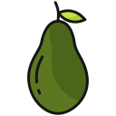
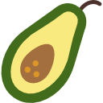
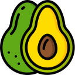

El aguacate se originó en México, donde parece que se cultivaba ya en 1500 a.C. También en Perú se han hallado semillas en tumbas incas (750 a.C.).
Los españoles que llegaron a América lo llamaron "pera de las Indias", por su aspecto. Se fue extendiendo por América (Guatemala, Perú, Venezuela) y a partir del descubrimiento de América, por otros países cálidos. En España se cultiva en Andalucía y Canarias.
NOMBRES
Persea americana - familia: Lauraceae llamado popularmente

AGUACATE

PALTO(A)

AGUACATERO
SIGNIFICADO
La palabra aguacate viene del náhuatl "ahuácatl", lo que también significa testículos (por su forma). Los españoles la llamaron "aguacata" y "avocado" y los portugueses "abacate". En inglés se conoce como "avocado pear" y en francés "avocat", en catalán "alvocat", en italiano "avocado".
Se conoce también con el nombre de palta, que proviene del quechua. Palta es el nombre de una etnia que vivió en Ecuador.